1 ภาพรวมและการเข้าสู่ระบบ
Super Ice POS คือระบบจัดการการขายน้ำแข็งแบบครบวงจร ครอบคลุมตั้งแต่การขาย การจัดการค้างชำระ การติดตามถุง การออกใบวางบิล ไปจนถึงรายงานสรุป ทุกอย่างใช้งานผ่านเว็บเบราว์เซอร์
การเข้าสู่ระบบ
- เปิดเว็บเบราว์เซอร์ แล้วไปที่ URL ของระบบ
- กรอก ชื่อผู้ใช้ และ รหัสผ่าน ที่ได้รับ
- กดปุ่ม "เข้าสู่ระบบ"
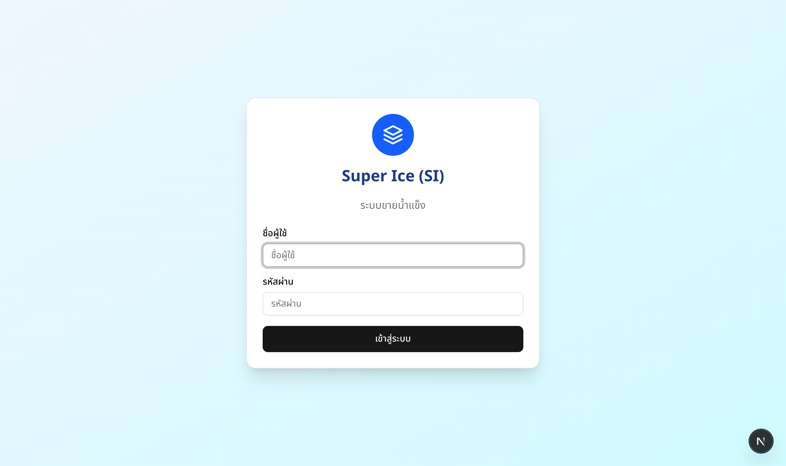
รูปที่ 1 — หน้าเข้าสู่ระบบ
ประเภทผู้ใช้ (4 ระดับ)
ระบบแบ่งสิทธิ์การใช้งานเป็น 4 ระดับ ตามบทบาทหน้าที่:
| ระดับ | ชื่อบทบาท | สิทธิ์การใช้งาน |
|---|---|---|
| 1 | ผู้ดูแลระบบ (Admin) | เข้าถึงทุกฟีเจอร์ รวมถึงจัดการสินค้า ผลิต/สต็อก จัดการผู้ใช้ และบันทึกระบบ (Audit Log) |
| 2 | สำนักงาน (Office) | ใช้งานได้เกือบทั้งหมด ยกเว้นจัดการผู้ใช้ จัดการสินค้า และผลิต/สต็อก |
| 3 | ผู้จัดการ (Manager) | ขายน้ำแข็ง รายการขาย ค้างชำระ รายงาน แดชบอร์ด |
| 4 | โรงงาน (Factory) | ดูจอแสดงผลโรงงาน (Factory Display) เท่านั้น — จะถูกส่งไปหน้าจอโรงงานอัตโนมัติเมื่อ Login |
กติกาสำคัญในการใช้งานจริง
- ใช้ชื่อผู้ใช้ของตนเองเท่านั้น ห้ามใช้บัญชีร่วมกัน เพื่อให้ Audit Log ระบุผู้ทำรายการได้ถูกต้อง
- ห้ามเดา ถ้าไม่แน่ใจเรื่องลูกค้า ราคา ยอดรับ หรือประเภทบิล ให้หยุดถามหัวหน้าหรือผู้มีสิทธิ์ก่อนบันทึก
- บิลผิดต้องแจ้ง ไม่แก้เองนอกขั้นตอน โดยเฉพาะการยกเลิกบิล การย้อนวันที่ และการแก้ราคาลูกค้า
- อุปกรณ์มีปัญหาต้องรายงานทันที เช่น อินเทอร์เน็ตหลุด เครื่องพิมพ์คลาดตำแหน่ง หรือจอโรงงานไม่อัปเดต
2 หน้าจอหลักและการนำทาง
แถบเมนูด้านข้าง (Sidebar)
หลังเข้าสู่ระบบ จะเห็นแถบเมนูทางซ้ายมือ ประกอบด้วย:
| เมนู | คำอธิบาย | สิทธิ์ |
|---|---|---|
| แดชบอร์ด | ภาพรวมยอดขายและกิจกรรมวันนี้ | Admin, Office, Manager |
| ขายน้ำแข็ง | บันทึกการขาย | Admin, Office, Manager |
| คืนสินค้า | บันทึกการคืนสินค้า/ถุง | Admin, Office |
| รายการขาย | ประวัติรายการทั้งหมด | Admin, Office, Manager |
| ใบวางบิล | ออกใบวางบิลลูกค้า | Admin, Office |
| ค้างชำระ | ดูและจัดการยอดค้าง | Admin, Office, Manager |
| ลูกค้า | จัดการข้อมูลลูกค้า | Admin, Office |
| จัดการสินค้า | เพิ่ม/แก้ไขสินค้า | Admin |
| ผลิต/สต็อก | บันทึกการผลิตและดูสต็อก | Admin |
| ติดตามถุง | ยอดถุงค้างรับ | Admin, Office, Manager |
| รายงาน | รายงานสรุปหลากหลายมุมมอง | Admin, Office |
| บันทึกระบบ | ดูประวัติการกระทำทั้งหมดในระบบ (Audit Log) | Admin |
| จอโรงงาน | ลิงก์ไปยังจอแสดงผลโรงงาน (เปิดแท็บใหม่) | Admin, Office, Manager, Factory |
| ตั้งค่า | เปลี่ยนรหัสผ่าน จัดการผู้ใช้ | ทุกระดับ* |
* ผู้ใช้ทุกระดับเปลี่ยนรหัสผ่านตัวเองได้ แต่สร้าง/ลบผู้ใช้คนอื่นต้องเป็น Admin
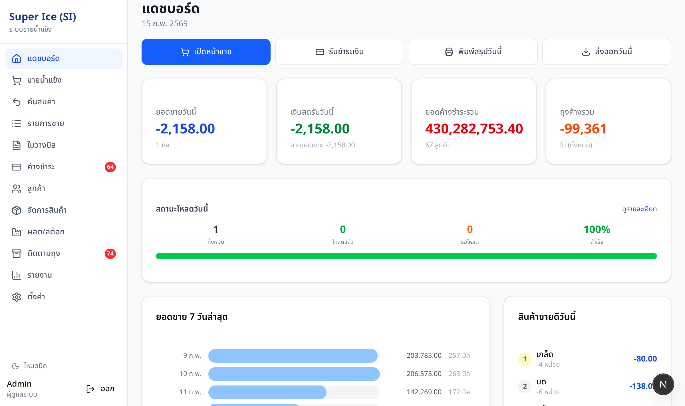
รูปที่ 2 — แดชบอร์ดและแถบเมนูด้านข้าง
แดชบอร์ดที่อัปเกรด
แดชบอร์ดใหม่มีฟีเจอร์เพิ่มเติมเพื่อให้ข้อมูลมากขึ้น:
- ลูกศรเปรียบเทียบ — ยอดขายและเงินสดรับจะแสดงลูกศรขึ้น/ลง เทียบกับเมื่อวาน พร้อม % เปลี่ยนแปลง
- อายุหนี้ค้างชำระ — การ์ดแสดงยอดหนี้แยกตามอายุ (0-7, 8-14, 15-30, 30+ วัน) เพื่อติดตามหนี้เก่า
- กิจกรรมผู้ใช้ — แสดงยอดขายและยอดยกเลิกของพนักงานแต่ละคนวันนี้ พร้อมเตือนถ้าอัตรายกเลิกสูง
- กราฟยอดขายตามสินค้า — กราฟเส้นแสดงยอดขายแยกตามชนิดสินค้า 7 วัน
- กราฟเวลาขาย — กราฟแท่งแสดงช่วงเวลาขายดี (รายชั่วโมง)
- มุมมองรายสัปดาห์ — สลับได้ระหว่าง 7 วันกับ 4 สัปดาห์
โหมดมืด (Dark Mode)
กดปุ่มที่ด้านล่างของ Sidebar เพื่อสลับระหว่างโหมดสว่างและโหมดมืด
สลับภาษา TH / EN (Main Shell)
ที่ส่วนล่างของ Sidebar (เหนือโปรไฟล์ผู้ใช้) จะมีปุ่ม TH และ EN สำหรับสลับภาษาเมนูหลักของระบบ:
- ค่าเริ่มต้นเป็นภาษาไทย (TH)
- ภาษาอังกฤษ (EN) จะเปลี่ยนเฉพาะข้อความในส่วนโครงหลัก เช่น เมนูด้านซ้าย ป้ายบทบาท ปุ่มออกจากระบบ
- ระบบจะจำค่าภาษาที่เลือกไว้ในเบราว์เซอร์เครื่องนั้นอัตโนมัติ
Command Palette — ค้นหาเร็ว
กด Ctrl+K (หรือ Cmd+K บน Mac) เพื่อเปิดกล่องค้นหาเร็ว สามารถค้นหาชื่อหน้า ชื่อลูกค้า หรือคำสั่งได้ทันที
ป้ายแจ้งเตือน (Badges)
เมนู ค้างชำระ และ ติดตามถุง จะแสดงตัวเลขสีแดงเมื่อมีลูกค้าค้างชำระเกิน 60 วัน หรือถุงค้างมากผิดปกติ
3 ขายน้ำแข็ง (Sale)
หน้าขายเป็นหัวใจหลักของระบบ ใช้บันทึกรายการขายประจำวัน
ขั้นตอนการขาย
- ค้นหาลูกค้า — พิมพ์ชื่อหรือรหัสลูกค้าในช่องค้นหาด้านบน แล้วเลือกจากรายการที่แสดง
- ระบบโหลดราคาอัตโนมัติ — สินค้าและราคาเฉพาะลูกค้าจะแสดงขึ้นมา (ราคาแก้ไขไม่ได้ ตั้งค่าจากหน้าลูกค้า)
- กรอกจำนวน — ใส่จำนวนสินค้าแต่ละรายการที่ลูกค้าสั่ง
- เพิ่มสินค้านอกรายการ (ถ้ามี) — เลือกสินค้าจาก dropdown "เพิ่มสินค้า" แล้วกำหนดราคาเอง ระบบจะจดจำราคานี้ให้อัตโนมัติ
- บันทึกถุง — ถุงออกจะนับจากสินค้าที่มีถุง สามารถระบุจำนวนถุงคืนได้ในช่อง "ถุงรับคืน"
- ระบุตำแหน่ง — กรอกบ่อ/แถว/ช่อง (ถ้ามี)
- เลือกสถานะการชำระ — กด ชำระแล้ว หรือ ค้างชำระ
- บันทึก — กดปุ่ม "บันทึกรายการ" หรือกด Enter
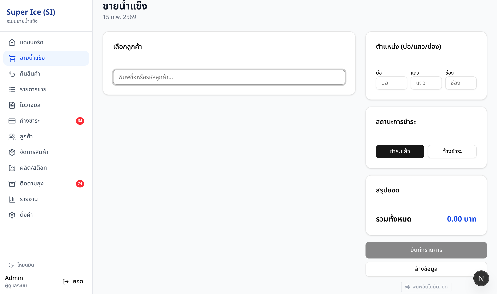
รูปที่ 3 — หน้าขายน้ำแข็ง
ฟีเจอร์เพิ่มเติม
| ฟีเจอร์ | รายละเอียด |
|---|---|
| สั่งซ้ำรายการล่าสุด | กดปุ่ม "สั่งซ้ำ" เพื่อดึงรายการสั่งซื้อล่าสุดของลูกค้ามาเติมให้อัตโนมัติ |
| พิมพ์อัตโนมัติ | เปิด/ปิดปุ่มรูปเครื่องพิมพ์ — เมื่อเปิด ระบบจะเปิดหน้าต่างใบเสร็จให้พิมพ์ทันทีหลังบันทึก |
| พิมพ์ใบเสร็จย้อนหลัง | หลังบันทึกเสร็จ จะมีปุ่ม "พิมพ์ใบเสร็จ" ให้กดพิมพ์ได้ |
| ล้างข้อมูล | กด "ล้างข้อมูล" หรือ Escape เพื่อเริ่มต้นใหม่ |
| โหมดออฟไลน์ | ถ้าอินเทอร์เน็ตขาด ระบบจะเก็บรายการขายไว้ในเครื่อง แล้วส่งอัตโนมัติเมื่อเน็ตกลับมา |
4 คืนสินค้า (Returns)
ใช้เมื่อลูกค้าคืนสินค้าหรือถุง
ขั้นตอนการคืนสินค้า
- ค้นหาลูกค้า — เหมือนหน้าขาย
- เลือกบิลอ้างอิง (ไม่บังคับ) — ระบบจะแสดงรายการขายล่าสุด สามารถเลือกเพื่อดึงรายการสินค้ามา
- กรอกจำนวนคืน — ใส่จำนวนสินค้าที่จะคืนในแต่ละรายการ (เริ่มจาก 0 ต้องกรอกเอง)
- คืนถุง — กรอกจำนวนถุงคืนในช่อง "ถุงรับคืน"
- บันทึก — กดปุ่ม "บันทึกการคืน"
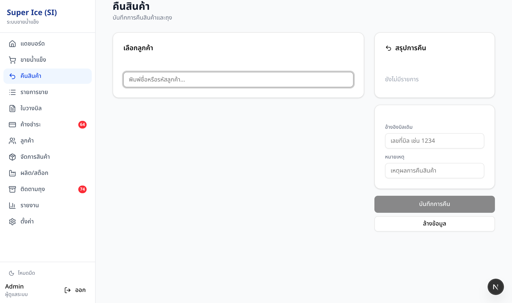
รูปที่ 4 — หน้าคืนสินค้า
5 รายการขาย (Transactions)
ดูประวัติรายการขายทั้งหมด กรองตามช่วงเวลา สถานะ หรือลูกค้า
ตัวกรอง
| ตัวกรอง | ตัวเลือก |
|---|---|
| ช่วงเวลา | วันนี้ / สัปดาห์นี้ / เดือนนี้ / เลือกเอง |
| สถานะ | ทั้งหมด / ชำระแล้ว / ค้างชำระ / บางส่วน / ยกเลิก |
| ค้นหา | พิมพ์ชื่อลูกค้า |
สิ่งที่ทำได้
- กดแถวรายการเพื่อ ดูรายละเอียด (สินค้า จำนวน ราคา)
- กดปุ่ม "พิมพ์ใบเสร็จ" เพื่อพิมพ์
- กดปุ่ม "ยกเลิกบิล" เพื่อ void รายการ — ต้องระบุเหตุผล (ถุงจะถูกคืนอัตโนมัติ)
- ดูยอดสรุป (จำนวนรายการ ยอดรวม ชำระแล้ว ค้างชำระ) ที่ด้านบน
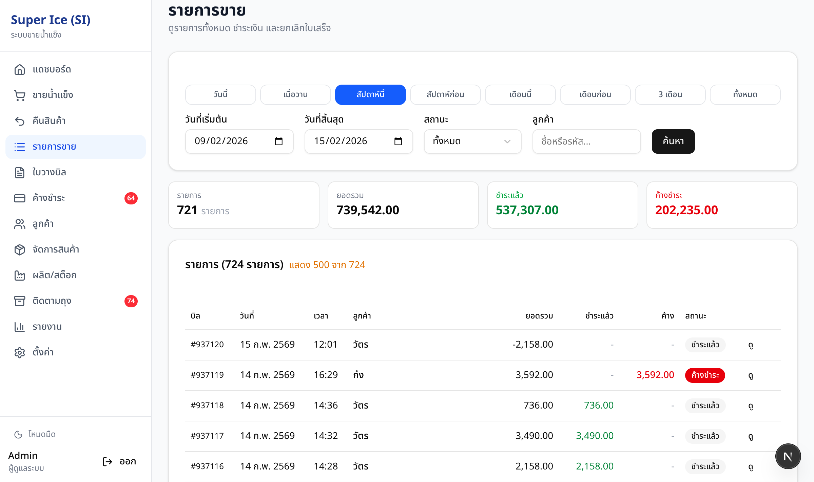
รูปที่ 5 — ประวัติรายการขาย
6 ค้างชำระ (Credit)
ติดตามลูกค้าที่มียอดค้างชำระ พร้อมระบบจัดการเก็บเงิน
สิ่งที่เห็นในหน้านี้
- สรุปยอดรวม — จำนวนลูกค้าค้าง, ยอดค้างทั้งหมด
- ตารางลูกค้า — ชื่อ, จำนวนบิลค้าง, ยอดค้างรวม, อายุหนี้ (0-30 / 31-60 / 60+ วัน)
การรับชำระ
- กดชื่อลูกค้า ที่ต้องการรับชำระ — จะเปิด Dialog แสดงบิลค้างทั้งหมด
- บันทึกชำระรายบิล — กดปุ่ม "ชำระ" ที่บิลนั้นๆ แล้วใส่จำนวนเงิน
- หรือ "ชำระทั้งหมด" — กดปุ่มนี้เพื่อชำระทุกบิลพร้อมกัน (ต้องยืนยันก่อน)
ใบแจ้งยอดบัญชี (Statement)
จากหน้า ค้างชำระ สามารถกดปุ่ม "ยอดบัญชี" เพื่อเปิดใบแจ้งยอดลูกค้ารูปแบบบัญชีเดินสะพัด (Bank-statement style) สำหรับพิมพ์หรือบันทึก PDF ได้ทันที
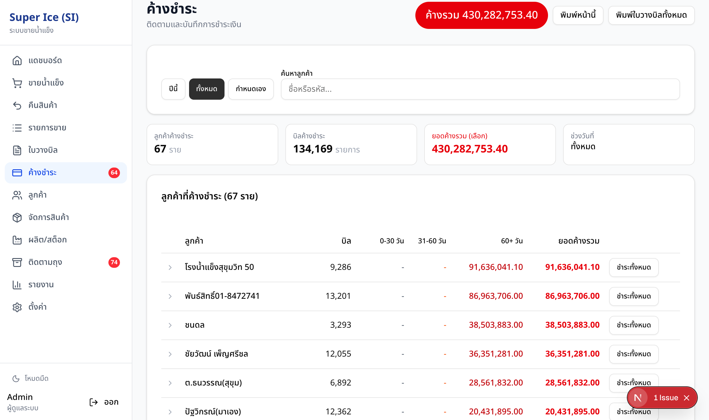
รูปที่ 6 — หน้าค้างชำระ
ตัวกรองช่วงเวลา
สามารถเลือกดูเฉพาะบิลค้างในช่วงวันที่ที่ต้องการ หรือเลือก "ทั้งหมด" เพื่อดูทุกรายการ
7 ใบวางบิล (Invoice)
ออกใบวางบิลสรุปรายการขายให้ลูกค้า สำหรับวางบิลเก็บเงิน
ขั้นตอน
- เลือกลูกค้า — ค้นหาและเลือกจากรายการ
- กำหนดช่วงวันที่ — เลือกวันเริ่มต้นและสิ้นสุด
- ดูตัวอย่าง — ระบบจะแสดงรายการขายทั้งหมดในช่วงนั้น พร้อมสรุปยอด (ขาย, ชำระแล้ว, ค้าง, ถุง)
- พิมพ์ — กดปุ่ม "พิมพ์ใบวางบิล" จะเปิดหน้าพิมพ์ที่ปรับแต่งสำหรับกระดาษ A4
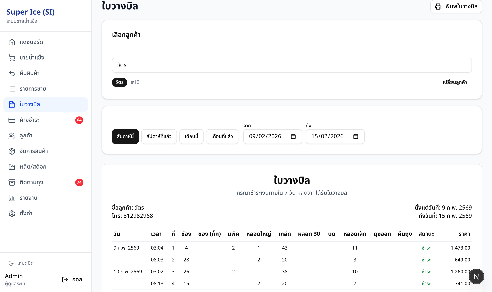
รูปที่ 7 — หน้าออกใบวางบิล
พิมพ์หลายลูกค้า (Batch)
กดปุ่ม "พิมพ์ทั้งหมด" เพื่อพิมพ์ใบวางบิลของลูกค้าหลายรายพร้อมกัน ระบบจะแบ่งหน้าให้อัตโนมัติ
8 ติดตามถุง (Bags)
ระบบติดตามถุงน้ำแข็งที่ส่งออกไปกับลูกค้า และถุงที่รับคืนกลับมา
แท็บข้อมูล
| แท็บ | แสดงอะไร |
|---|---|
| ยอดรวมลูกค้า | สรุปจำนวนถุงค้างของแต่ละลูกค้า |
| ตามชนิดสินค้า | ถุงค้างแยกตามลูกค้าและชนิดสินค้า |
ดูประวัติถุง
กดชื่อลูกค้าเพื่อดู ประวัติถุง (Ledger) ทั้งหมด แสดงทุกรายการถุงออก/คืน/ปรับ พร้อมวันที่
ปรับยอดถุง (Admin)
ผู้ดูแลสามารถกดปุ่ม "ปรับยอด" เพื่อเพิ่มหรือลดจำนวนถุงด้วยตนเอง พร้อมระบุหมายเหตุ
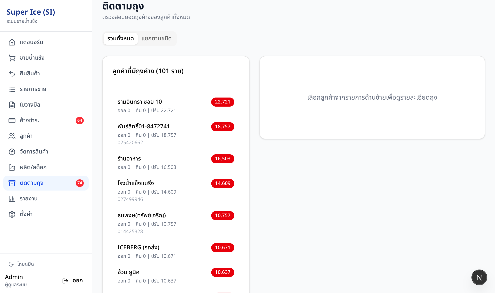
รูปที่ 8 — หน้าติดตามถุง
9 รายงาน (Reports)
ระบบรายงานมีหลายมุมมอง เข้าถึงผ่านแท็บต่างๆ ในหน้าเดียว ทุกรายงานสามารถ ส่งออกเป็น CSV/Excel และ พิมพ์ ได้
แท็บรายงาน
| แท็บ | ข้อมูลที่แสดง | ใช้เมื่อ |
|---|---|---|
| สรุปรายวัน | จำนวนรายการและยอดขายแยกตามวัน | ดูภาพรวมยอดขายรายวัน |
| ตามสินค้า | จำนวนขาย/คืน/สุทธิ ของแต่ละสินค้า | ดูว่าสินค้าตัวไหนขายดี |
| ตามลูกค้า | จำนวนรายการและยอดซื้อของแต่ละลูกค้า | วิเคราะห์ลูกค้ารายใหญ่ |
| เงินสด | ยอดขาย vs ชำระแล้ว vs ค้าง แยกตามวัน | กระทบยอดเงินสดรายวัน |
| ราคาแยก | ราคาต่อหน่วยของแต่ละลูกค้า×สินค้า | ตรวจสอบว่าลูกค้าไหนได้ราคาเท่าไหร่ |
| รายเดือน | สรุปรายเดือน พร้อมกราฟ | วิเคราะห์แนวโน้มรายเดือน พิมพ์รายงานประจำเดือน |
| ประวัติ | เทรนด์ยอดขาย, พฤติกรรมลูกค้า, Top 10 ลูกค้า | วิเคราะห์ระยะยาว (เทรนด์, ค่าเฉลี่ยเคลื่อนที่ 7 วัน) |
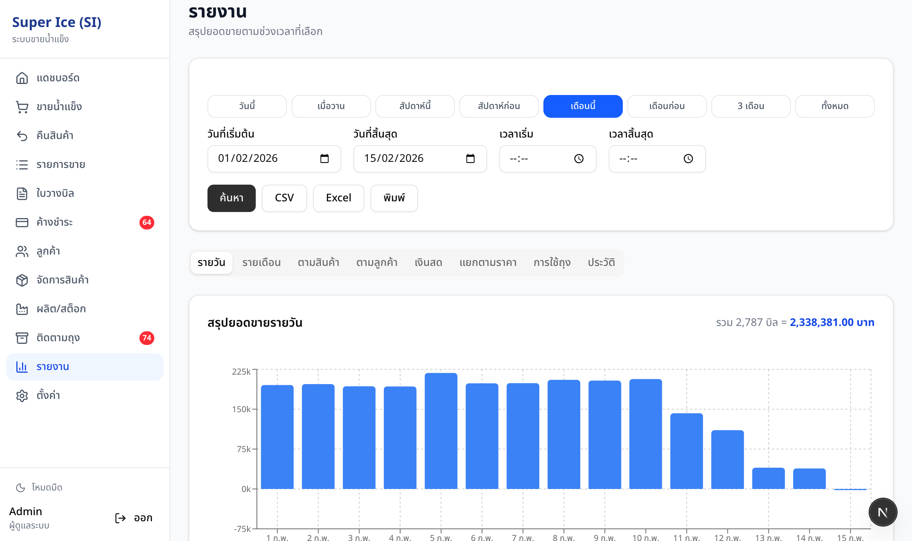
รูปที่ 9a — รายงานสรุปรายวัน
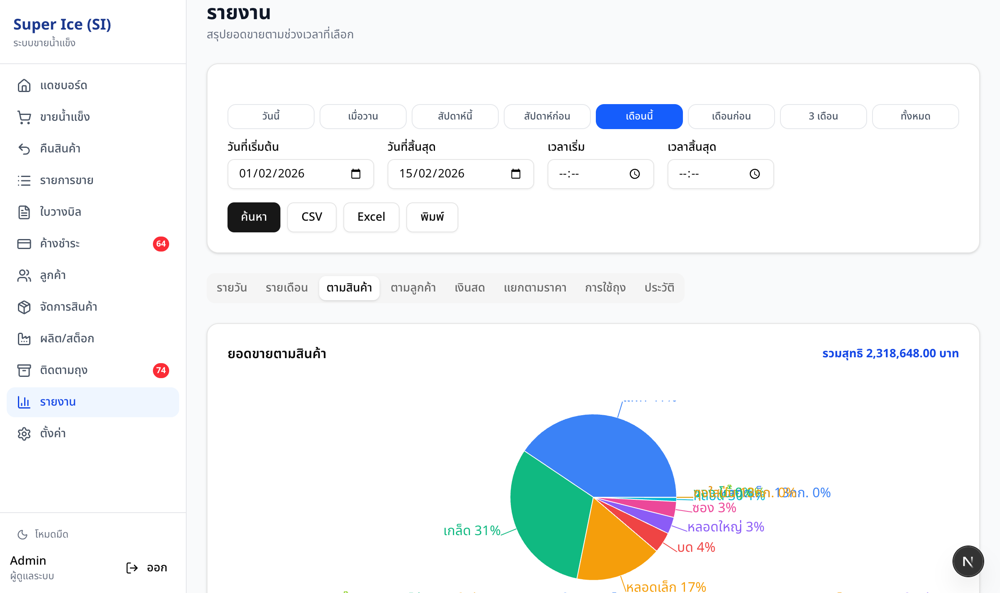
รูปที่ 9b — รายงานตามสินค้า (Pie Chart)
การส่งออกข้อมูล
ทุกแท็บมีปุ่ม "ส่งออก CSV" ที่ด้านบน กดแล้วไฟล์จะดาวน์โหลดทันที สามารถเปิดใน Excel ได้ นอกจากนี้ยังสามารถกดปุ่ม "ส่งออก Excel" เพื่อดาวน์โหลดเป็นไฟล์ .xlsx สำหรับรายงานสรุปรายวัน รายงานเครดิต และรายงานลูกค้า
10 จัดการลูกค้า (Customers)
รายชื่อลูกค้า
หน้า "ลูกค้า" แสดงรายชื่อทั้งหมด สามารถ:
- ค้นหาด้วยชื่อหรือรหัส
- เรียงลำดับตามรหัส, ชื่อ, สถานะเครดิต, ถุงค้าง
- กดเข้าไปดูรายละเอียดลูกค้าแต่ละราย
หน้ารายละเอียดลูกค้า
แสดงข้อมูลลูกค้า ราคาสินค้าเฉพาะราย ประวัติการซื้อ และประวัติถุง ทั้งหมดในหน้าเดียว
ตารางราคา (Price Matrix)
หน้า "ลูกค้า → ตารางราคา" แสดงตารางราคาแบบ Excel — ลูกค้าทุกรายเป็นแถว สินค้าทุกชนิดเป็นคอลัมน์ สามารถ:
- แก้ไขราคาได้เลยในตาราง (เซลล์ที่แก้จะเปลี่ยนเป็นสีเหลือง)
- กดปุ่ม "บันทึก X รายการ" เพื่อบันทึกทุกการแก้ไขพร้อมกัน
- ค้นหาและเรียงลำดับได้
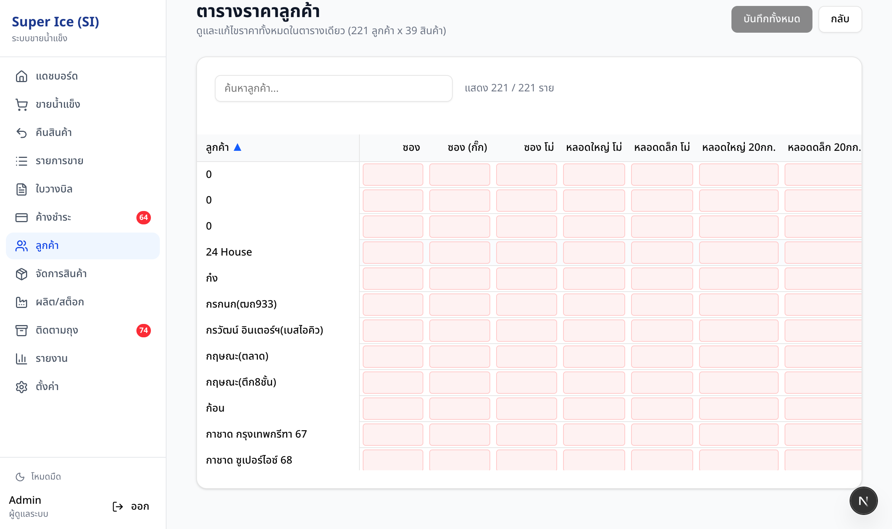
รูปที่ 10 — ตารางราคาลูกค้า×สินค้า
11 ฟีเจอร์ผู้ดูแลระบบ (Admin)
เมนูเหล่านี้เห็นเฉพาะผู้ดูแลระบบ (Admin) เท่านั้น
จัดการสินค้า
- เพิ่ม/แก้ไขชนิดสินค้า (ชื่อ, สินค้ามีถุงหรือไม่, เปิด/ปิดใช้งาน)
- จัดลำดับการแสดงผล
ผลิต/สต็อก
- สต็อกปัจจุบัน — แสดงยอดผลิต - ขาย + คืน = สต็อกคงเหลือ ของแต่ละสินค้า
- บันทึกการผลิต — เลือกสินค้า กรอกจำนวน พร้อมหมายเหตุ
- ประวัติการผลิต — ดูรายการผลิตย้อนหลัง
จัดการผู้ใช้ (ตั้งค่า)
- สร้างผู้ใช้ใหม่ กำหนดชื่อ รหัสผ่าน และบทบาท (4 ระดับ: Admin, Office, Manager, Factory)
- เปลี่ยนรหัสผ่านผู้ใช้คนอื่น
- ลบผู้ใช้ (ลบตัวเองไม่ได้)
สำรองข้อมูล
ผู้ดูแลสามารถดาวน์โหลดข้อมูลทั้งหมดเป็นไฟล์ JSON ได้จากระบบ สำหรับสำรองข้อมูล
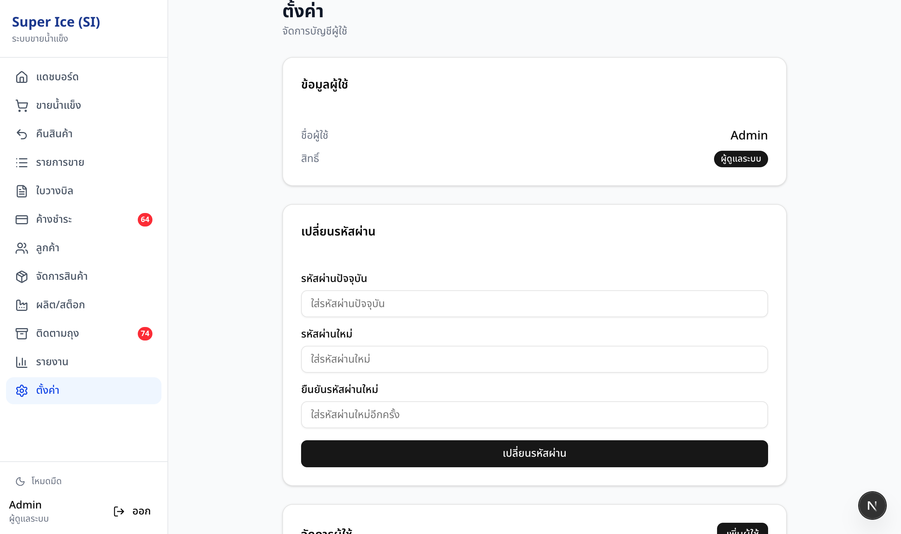
รูปที่ 11 — หน้าตั้งค่าและจัดการผู้ใช้
12 บันทึกระบบ (Audit Log)
หน้า บันทึกระบบ แสดงประวัติการกระทำทั้งหมดในระบบ เพื่อใช้ตรวจสอบว่า ใครทำอะไร เมื่อไหร่ กับข้อมูลอะไร เข้าถึงได้เฉพาะ Admin เท่านั้น
ข้อมูลที่แสดง
| คอลัมน์ | คำอธิบาย |
|---|---|
| วันที่/เวลา | เวลาที่เกิดเหตุการณ์ |
| ผู้ใช้ | ชื่อผู้ใช้ที่ทำรายการ |
| การกระทำ | สิ่งที่ทำ เช่น สร้างรายการขาย, ยกเลิกบิล, แก้ไขลูกค้า |
| ประเภท | ชนิดของข้อมูลที่ถูกเปลี่ยน (transaction, customer, production, bag, user) |
| รหัส | รหัสของข้อมูลที่เกี่ยวข้อง (เช่น เลขที่บิล, รหัสลูกค้า) |
| รายละเอียด | ข้อมูลเพิ่มเติม เช่น จำนวนเงิน, เหตุผลยกเลิก, ราคาที่เปลี่ยน |
ตัวกรอง
- ประเภทข้อมูล — เลือกดูเฉพาะ transaction, customer, production, bag, user หรือดูทั้งหมด
- ช่วงวันที่ — เลือกวันเริ่มต้นและสิ้นสุด
การกระทำที่ถูกบันทึก
| ประเภท | การกระทำที่บันทึก |
|---|---|
| Transaction (รายการขาย) | สร้างรายการขาย, ยกเลิกบิล (พร้อมเหตุผล), บันทึกชำระเงิน |
| Customer (ลูกค้า) | เพิ่มลูกค้าใหม่, แก้ไขข้อมูลลูกค้า, แก้ไขราคา |
| Production (การผลิต) | บันทึกการผลิต |
| Bag (ถุง) | ปรับยอดถุงด้วยตนเอง |
| User (ผู้ใช้) | สร้างผู้ใช้ใหม่, ลบผู้ใช้, เปลี่ยนรหัสผ่าน |
13 จอแสดงผลโรงงาน (Factory Display)
ระบบจอแสดงผลสำหรับติดตั้งบนทีวีหรือหน้าจอในโรงงาน ไม่ต้อง Login เปิดจากเบราว์เซอร์ได้เลย
หน้าจอที่มี
| หน้า | URL | ใช้งาน |
|---|---|---|
| คิวสั่งซื้อ | /display | แสดงออเดอร์ปัจจุบันที่ต้องจัด (FIFO) อัพเดตอัตโนมัติ |
| สรุปวัน | /display/summary | แสดงจำนวนออเดอร์ทั้งหมด จัดแล้ว รอจัด |
| บอร์ด 6 Bay | /display/bays | จอสำหรับทีมโหลด ดูคิวและจำนวนคงเหลือราย Bay (1-6) พร้อมกลุ่ม Unassigned |
| จัดการ (Manager) | /display/manager | จอควบคุมบนแท็บเล็ต ปรับจำนวนโหลดด้วยปุ่ม +1/+5/+10 และกดปิดงาน |
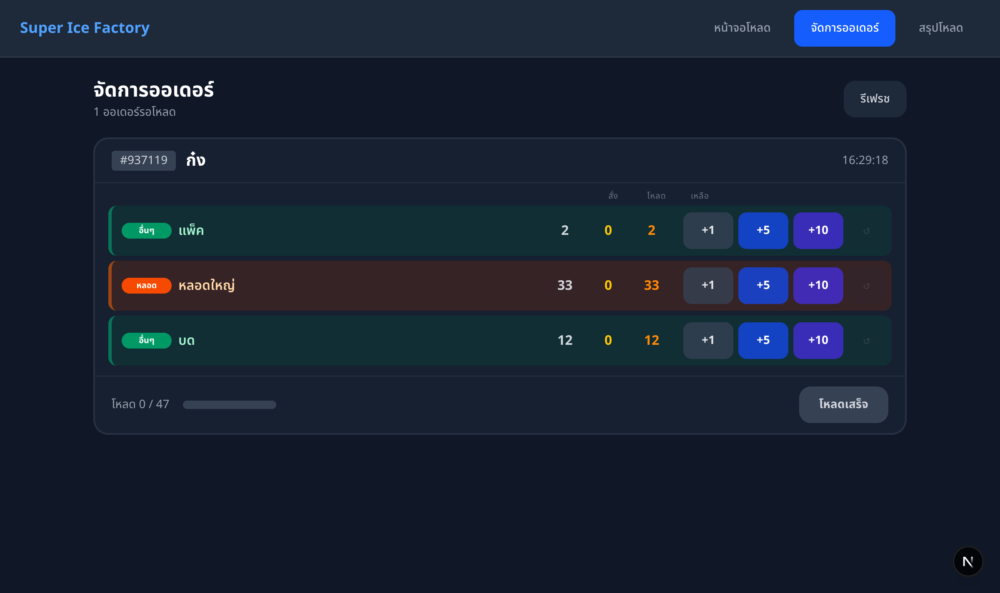
รูปที่ 12 — จอแสดงผลโรงงาน — หน้าจัดการออเดอร์
14 จำลองขั้นตอนงานทั้งระบบ (End-to-End Workflow)
ส่วนนี้แสดงขั้นตอนการทำงานจริงตั้งแต่รับออเดอร์จนจบ เพื่อให้เห็นภาพรวมว่าแต่ละส่วนเชื่อมกันอย่างไร
(หน้าขาย)
(จอโรงงาน)
(Back Office)
(Reports)
ขั้นตอนที่ 1 — รับออเดอร์ (หน้าขาย)
พนักงานรับออเดอร์จากลูกค้า บันทึกลงหน้า "ขายน้ำแข็ง"
- พิมพ์ชื่อลูกค้าในช่องค้นหา เช่น "ร้านอาหาร..." แล้วเลือก
- ระบบจะโหลดราคาเฉพาะลูกค้า กรอกจำนวนสินค้าที่สั่ง เช่น น้ำแข็งหลอดใหญ่ 5 ถุง
- ระบุ Bay 1-6 (เว้นว่างได้ หากยังไม่ทราบ Bay)
- เลือก ค้างชำระ (ลูกค้าเครดิต)
- กด "บันทึกรายการ"
ผลลัพธ์: ระบบบันทึกรายการขาย สถานะ "ค้างชำระ" พร้อมสร้างรายการถุงออก — บันทึกระบบจะเก็บชื่อผู้ขายไว้โดยอัตโนมัติ
รูปที่ 14a — รับออเดอร์จากลูกค้า (หน้าขาย)
ขั้นตอนที่ 2 — จัดสินค้า (จอโรงงาน)
โหมดจอคู่: แท็บเล็ตใช้ /display/manager และจอโรงงานใช้ /display/bays
- หน้าจอแสดงออเดอร์ที่รอจัด เรียงตามลำดับเข้า (FIFO)
- ทีมโหลดดูคงเหลือราย Bay บน /display/bays เพื่อกระจายงานตาม Bay
- ผู้ควบคุมกด +1/+5/+10 ใน /display/manager ตามจำนวนที่โหลดจริง
- เมื่อครบแล้ว กดปุ่ม "โหลดเสร็จ" ออเดอร์จะเปลี่ยนสถานะเป็น "Loaded"
ผลลัพธ์: ออเดอร์เปลี่ยนจาก "pending" เป็น "loaded" และจอ /display/bays + /display/summary จะอัพเดตทันที
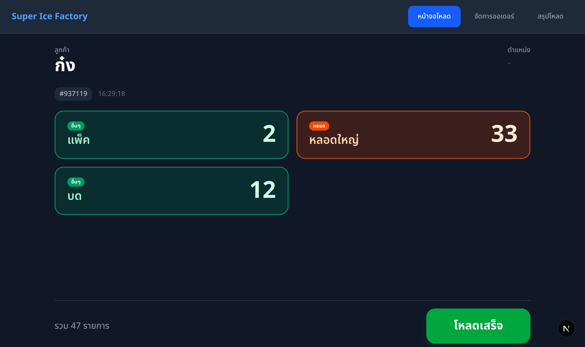
รูปที่ 14b — จอโรงงาน: ออเดอร์รอจัดสินค้า
ขั้นตอนที่ 3 — ตรวจสอบและรับชำระ (Back Office)
พนักงานออฟฟิศตรวจสอบรายการขายและจัดการยอดค้าง
- ไปที่ "รายการขาย" — จะเห็นรายการที่เพิ่งบันทึก กดเข้าไปดูรายละเอียดเพื่อตรวจสอบ
- ไปที่ "ค้างชำระ" — จะเห็นลูกค้ามียอดค้างชำระเพิ่มขึ้น
- เมื่อลูกค้ามาจ่ายเงิน กดที่ชื่อลูกค้า → กด "ชำระ" ที่บิลนั้น → ใส่จำนวนเงิน → บันทึก
- สถานะบิลเปลี่ยนจาก "ค้างชำระ" เป็น "ชำระแล้ว"

รูปที่ 14c — แดชบอร์ดตรวจสอบยอดขายและค้างชำระ
ขั้นตอนที่ 4 — ดูรายงานสรุป
สิ้นวันหรือสิ้นสัปดาห์ ดูรายงานสรุปเพื่อวิเคราะห์ผลประกอบการ
- ไปที่ "รายงาน" → แท็บ "สรุปรายวัน" — ดูยอดขายวันนี้
- เปลี่ยนไปแท็บ "เงินสด" — กระทบยอดเงินสดรับจริง vs ยอดขาย
- เปลี่ยนไปแท็บ "ตามสินค้า" — ดูว่าสินค้าไหนขายดีที่สุด
- กดปุ่ม "ส่งออก CSV" หรือ "ส่งออก Excel" เพื่อเก็บข้อมูลไว้ใน Excel
รูปที่ 14d — รายงานสรุปประจำวัน
15 คีย์ลัดสำหรับใช้งาน
| คีย์ลัด | ฟังก์ชัน | ใช้ได้ที่ |
|---|---|---|
| Ctrl+K | เปิด Command Palette ค้นหาเร็ว | ทุกหน้า |
| ? | แสดงรายการคีย์ลัดทั้งหมด | ทุกหน้า (ยกเว้นขณะพิมพ์ในช่องข้อความ) |
| Enter | บันทึกรายการขาย | หน้าขาย |
| Escape | ล้างฟอร์มทั้งหมด | หน้าขาย |
| F2 | โฟกัสช่องค้นหาลูกค้า | หน้าขาย |
16 แนวทางก่อนใช้งานจริง (Go-Live)
หัวข้อนี้ใช้สำหรับประชุมทีมก่อนเริ่มใช้งานจริง เพื่อให้ทุกคนเข้าใจหน้าที่ กติกา และวิธีรับมือเมื่อเกิดปัญหาในช่วงสัปดาห์แรก
หัวข้อที่ควรตกลงให้ชัดก่อนวันเริ่มใช้งาน
| หัวข้อ | สิ่งที่ต้องตกลง |
|---|---|
| วันเริ่มใช้งานจริง | เริ่มใช้ระบบวันไหน เวลาใด และหยุดใช้วิธีเดิมตั้งแต่เมื่อใด |
| เครื่องที่ใช้งาน | เครื่องขายหลัก เครื่องพิมพ์หลัก และหน้าจอโรงงานใช้เครื่องใด ใครดูแล |
| บทบาทประจำจุด | ใครรับออเดอร์ ใครจัดสินค้า ใครตรวจสอบค้างชำระ ใครอนุมัติกรณีพิเศษ |
| สิทธิ์อนุมัติ | ใครมีสิทธิ์ยกเลิกบิล แก้ไขย้อนหลัง ปรับราคา หรือปรับยอดถุง |
| ขั้นตอนสำรอง | ถ้าอินเทอร์เน็ตล่ม พิมพ์ไม่ได้ หรือจอโรงงานไม่อัปเดต ให้ติดต่อใครและทำงานต่ออย่างไร |
| การปิดยอดสิ้นวัน | ใครตรวจยอดขาย เงินสดรับ ค้างชำระ ถุง และรายงานสรุปก่อนจบวัน |
หน้าที่แต่ละบทบาทในวันเริ่มใช้งาน
| บทบาท | หน้าที่หลัก |
|---|---|
| Admin | ดูแลผู้ใช้ รหัสผ่าน การตั้งค่า สินค้า/สต็อก สำรองข้อมูล และตรวจสอบ Audit Log เมื่อมีปัญหา |
| Office | รับออเดอร์ เลือกลูกค้าให้ถูก ตรวจราคา บันทึกยอดรับ พิมพ์เอกสาร และตรวจสอบรายการขายกับค้างชำระ |
| Manager | อนุมัติกรณีพิเศษ เช่น ยกเลิกบิล ย้อนวันที่ แก้ไขผิดพลาดสำคัญ และตัดสินใจเมื่อข้อมูลไม่ตรงกัน |
| Factory | ดูหน้าจอ /display หรือ /display/manager จัดสินค้าตามคิว กด "โหลดแล้ว" เมื่อเสร็จ และแจ้งทันทีหากจำนวนไม่ตรง |
สถานการณ์ที่ต้องแจ้งหัวหน้าทันที
- เลือกลูกค้าผิด ราคาผิด หรือบันทึกยอดเงินผิด
- ต้องยกเลิกบิลหรือแก้ไขรายการย้อนหลัง
- ยอดถุงไม่ตรงกับของจริง หรือมีการปรับยอดถุงด้วยมือ
- อินเทอร์เน็ตหลุดแล้วรายการค้างส่งนานผิดปกติ
- เครื่องพิมพ์ไม่พิมพ์ พิมพ์ซ้อน หรือพิมพ์คลาดตำแหน่ง
- จอโรงงานไม่ขึ้นออเดอร์ หรือสถานะไม่เปลี่ยนหลังจัดของเสร็จ
เช็กลิสต์สิ้นวันช่วงสัปดาห์แรก
- ตรวจยอดขายรวมของวันจากรายงาน เทียบกับรายการขายที่บันทึกจริง
- ตรวจยอดเงินสดรับจริง เทียบกับบิลที่บันทึกรับชำระในระบบ
- ตรวจบิลค้างชำระใหม่และบิลที่มีการรับชำระบางส่วน
- ตรวจยอดถุงออก คืนถุง และซื้อถุง ว่าตรงกับการใช้งานจริง
- ตรวจว่ามีรายการผิดพลาดหรือข้อสงสัยค้างอยู่หรือไม่ แล้วสรุปปัญหาไว้สำหรับประชุมสั้นวันถัดไป
Super Ice POS — คู่มือการใช้งาน เวอร์ชัน 2.1
มีนาคม 2569